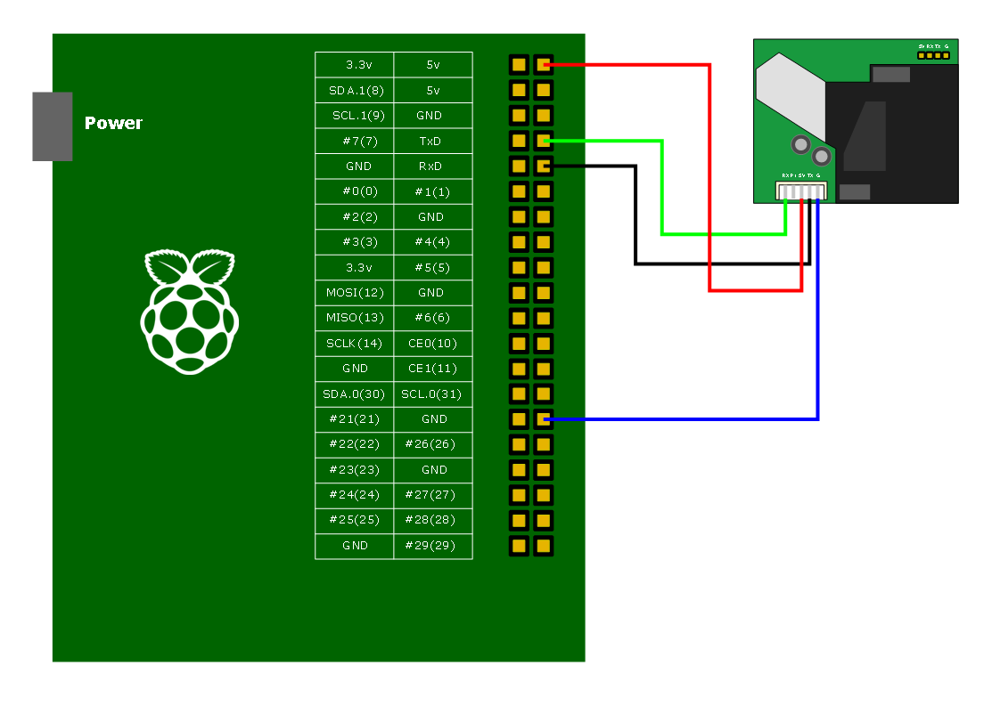

PM1001 먼지 센서는 1um이상의 먼지를 감지하여 수량PCS/L값 으로 출력해 주는 센서이다. 센서에 대한 자세한 사양은 다음 홈페이지를 참고하기 바란다. http://www.diwellshop.com/product/detail.html?product_no=172&cate_no=36&display_group=1
테스트에 사용된 하드웨어 구성은 다음과 같다.
PM1001 센서는 UART 통신을 사용하므로 다음 링크를 참고하여 Raspberry Pi의 UART설정을 변경한다.
UART ConfigurationEPICS에서 시리얼 통신을 하기위해 Asyn과 StreamDevice Library를 설치한다.
우선 stieLibs로 이동한다. siteLibs가 없다면 svn에서 내려 받는다.
pi@raspberrypi ~/epics/R3.14.12.4 $ svn co svn://10.1.5.14/raon/trunk/siteLibs
siteLibs안에 있는 asyn-4-21과 stream2-6 폴더로 이동한 후 make를 실행한다.
pi@raspberrypi ~/epics/R3.14.12.4 $ cd siteLibs/asyn-4-21 pi@raspberrypi ~/epics/R3.14.12.4/siteLibs/asyn-4-21 $ make pi@raspberrypi ~/epics/R3.14.12.4/siteLibs/asyn-4-21 $ cd ../stream-2-6 pi@raspberrypi ~/epics/R3.14.12.4/siteLibs/stream-2-6 $ make
make가 완료되면 siteLibs/lib/linux-arm 폴더에 libasyn.so와 libstream.so파일이 생성된다.
이제 siteApps폴더로 이동한 후 App폴더를 만든다. siteApps폴더가 없다면 svn으로 부터 내려 받는다.
pi@raspberrypi ~/epics/R3.14.12.4 $ svn co svn://10.1.5.14/raon/trunk/siteApps
siteApps 폴더안에 pm1001폴더를 생성한 다음 기본 ioc구조를 만든다.
pi@raspberrypi ~/epics/R3.14.12.4 $ cd siteApps pi@raspberrypi ~/epics/R3.14.12.4/siteApps $ mkdir pm1001 pi@raspberrypi ~/epics/R3.14.12.4/siteApps $ cd pm1001 pi@raspberrypi ~/epics/R3.14.12.4/siteApps/pm1001 $ makeBaseApp.pl -t ioc pm1001 pi@raspberrypi ~/epics/R3.14.12.4/siteApps/pm1001 $ makeBaseApp.pl -i -t ioc pm1001 Using target architecture linux-arm (only one available) The following applications are available: pm1001 What application should the IOC(s) boot? The default uses the IOC's name, even if not listed above. Application name? pm1001
pm1001/configure/RELEASE 파일에 asyn과 stream Library위치를 추가해 준다.
# RELEASE - Location of external support modules
#
# IF YOU MAKE ANY CHANGES to this file you must subsequently
# do a "gnumake rebuild" in this application's top level
# directory.
#
# The build process does not check dependencies against files
# that are outside this application, thus you should do a
# "gnumake rebuild" in the top level directory after EPICS_BASE
# or any other external module pointed to below is rebuilt.
#
# Host- or target-specific settings can be given in files named
# RELEASE.$(EPICS_HOST_ARCH).Common
# RELEASE.Common.$(T_A)
# RELEASE.$(EPICS_HOST_ARCH).$(T_A)
#
# This file should ONLY define paths to other support modules,
# or include statements that pull in similar RELEASE files.
# Build settings that are NOT module paths should appear in a
# CONFIG_SITE file.
TEMPLATE_TOP=$(EPICS_BASE)/templates/makeBaseApp/top
# If using the sequencer, point SNCSEQ at its top directory:
#SNCSEQ=$(EPICS_BASE)/../modules/soft/seq
# EPICS_BASE usually appears last so other apps can override stuff:
EPICS_BASE=/home/pi/epics/R3.14.12.4/base
# Set RULES here if you want to take build rules from somewhere
# other than EPICS_BASE:
#RULES=/path/to/epics/support/module/rules/x-y
ASYN=$(EPICS_PATH)/siteLibs
STREAM=$(EPICS_PATH)/siteLibs
pm1001App/src 폴더로 이동하면 pm1001Main.cpp와 Makefile이 있다. Makefile에 다음 코드를 추가한다.
TOP=../.. include $(TOP)/configure/CONFIG #---------------------------------------- # ADD MACRO DEFINITIONS AFTER THIS LINE #============================= #============================= # Build the IOC application PROD_IOC = pm1001 # pm1001.dbd will be created and installed DBD += pm1001.dbd # pm1001.dbd will be made up from these files: pm1001_DBD += base.dbd # Include dbd files from all support applications: #pm1001_DBD += xxx.dbd pm1001_DBD += stream.dbd pm1001_DBD += drvAsynSerialPort.dbd # Add all the support libraries needed by this IOC #pm1001_LIBS += xxx pm1001_LIBS += stream pm1001_LIBS += asyn # pm1001_registerRecordDeviceDriver.cpp derives from pm1001.dbd pm1001_SRCS += pm1001_registerRecordDeviceDriver.cpp # Build the main IOC entry point on workstation OSs. pm1001_SRCS_DEFAULT += pm1001Main.cpp pm1001_SRCS_vxWorks += -nil- # Add support from base/src/vxWorks if needed #pm1001_OBJS_vxWorks += $(EPICS_BASE_BIN)/vxComLibrary # Finally link to the EPICS Base libraries pm1001_LIBS += $(EPICS_BASE_IOC_LIBS) #=========================== include $(TOP)/configure/RULES #---------------------------------------- # ADD RULES AFTER THIS LINE
이제 필요한 Library는 사용준비가 되었으므로 db와 proto 파일을 만들도록 한다. pm1001App/Db 폴더로 이동하여 pm1001.db 파일을 만들고 다음 record를 작성한다.
record(ai,"SS:DUST")
{
field(DTYP, "stream")
field(INP, "@sensor.proto get_dust UART")
field(SCAN, "1 second")
}
작성한 db파일을 Makefile에 추가해 준다.
TOP=../.. include $(TOP)/configure/CONFIG #---------------------------------------- # ADD MACRO DEFINITIONS AFTER THIS LINE #---------------------------------------------------- # Optimization of db files using dbst (DEFAULT: NO) #DB_OPT = YES #---------------------------------------------------- # Create and install (or just install) into/db # databases, templates, substitutions like this #DB += xxx.db드 DB += pm1001.db #---------------------------------------------------- # If .db template is not named *.template add # _template = include $(TOP)/configure/RULES #---------------------------------------- # ADD RULES AFTER THIS LINE
proto 파일을 만들기 앞서 pm1001 센서의 통신 명령어를 알아야 한다. 메뉴얼을 참고하면 통신 명령어가 다음과 같음을 알 수 있다.
SEND: [IP] [LB] [CMD] [DF] [CS]
RESPONSE: [ACK] [LB] [CMD] [DF] [CS]
여기서 각 명령에 대한 의미는 다음과 같다.
[IP]: address(fixed as 0x11) [LB]: byte length followed does not include CS [CMD]: command [DF]: parameter items with command, optional [CS]: CS = -(IP + LB + CMD + DF) [ACK] 0x16 right command
예를 들어 PM1001로 부터 먼지 값을 읽는 명령어는 다음과 같다.
SEND: 0X11, 0X01, 0X01, 0XED
RESPONSE: 0x16, 0x0D, 0x01, 4BytePM값, 4BytePM값, 4BytePM값, [CS]
여기서 PM값은 4Byte(DF0, DF1, DF2, DF3)로 구성된 먼지 데이터 값으로 측정 값은 다음과 같다.
Measured value = DF0 * 256 * 256 * 256 + DF1 * 256 * 256 + DF2 * 256 + DF3
참고로 값은 값이 3번 반복해서 출력되므로 첫 번째 값만 읽으면 된다.
이제 proto 파일을 만들기 위해 pm1001에서 proto폴더를 하나 만든 후 pm1001.proto 파일을 다음과 같이 작성한다.
pi@raspberrypi ~/epics/R3.14.12.4/siteApps/pm1001 $ mkdir proto pi@raspberrypi ~/epics/R3.14.12.4/siteApps/pm1001 $ cd proto
get_dust{
out "\x11\x01\x01\xED";
in "%*3r%4r%*4r%*4r%*1r";
}
get_dust 함수는 out을 통해 먼지 값을 읽어오는 명령을 전송한다. pm1001 센서는 응답 값으로 총 16byte의 값을 리턴하는데 이 중 먼지 데이터는 처음 3byte 이후 4byte 씩 3번 반복되므로 첫 4byte만 저장하고 checksum을 포함한 나머지 byte는 무시한다. 참고로 읽고자 하는 값을 무시 하고 싶을 때는 '*'를 앞에다 붙이면 된다. 여기에서는 4byte를 읽으므로 앞서 말한 Measured value를 계산하기 위해 256을 곱하지 않아도 된다. 만약 DF0 ~ DF3을 따로 읽고자 하면 다음과 같이 1byte씩 읽으면 된다.
get_d0{
out "\x11\x01\x01\xED";
in "%*3r%1r%*3r%*4r%*4r%*1r";
}
get_d1{
out "\x11\x01\x01\xED";
in "%*3r%*1r%1r%*2r%*4r%*4r%*1r";
}
get_d2{
out "\x11\x01\x01\xED";
in "%*3r%*2r%1r%*1r%*4r%*4r%*1r";
}
get_d3{
out "\x11\x01\x01\xED";
in "%*3r%*3r%1r%*4r%*4r%*1r";
}
이제 pm1001폴더로 이동하여 make를 실행하자
pi@raspberrypi ~/epics/R3.14.12.4/siteApps/pm1001 $ make
ioc를 실행하기 위해 iocBoot/iocpm1001로 이동 후 st.cmd 파일에 다음과 같이 추가 한다.
#!../../bin/linux-arm/pm1001
## You may have to change pm1001 to something else
## everywhere it appears in this file
< envPaths
cd ${TOP}
epicsEnvSet "STREAM_PROTOCOL_PATH" "../../proto"
## Register all support components
dbLoadDatabase "dbd/pm1001.dbd"
pm1001_registerRecordDeviceDriver pdbbase
drvAsynSerialPortConfigure "UART" "/dev/ttyAMA0"
asynSetOption("UART", 0, "baud", "9600")
asynSetOption("UART", 0, "bits", "8")
asynSetOption("UART", 0, "parity", "none")
## Load record instances
#dbLoadRecords("db/xxx.db","user=piHost")
dbLoadRecords("db/pm1001.db")
cd ${TOP}/iocBoot/${IOC}
iocInit
#seq sncxxx,"user=piHost"
st.cmd를 실행파일로 변경한 후 실행한다.
pi@raspberrypi ~/epics/R3.14.12.4/siteApps/pm1001/iocBoot/iocpm1001 $ chmod 755 st.cmd pi@raspberrypi ~/epics/R3.14.12.4/siteApps/pm1001/iocBoot/iocpm1001 $ sudo ./st.cmd #!../../bin/linux-arm/pm1001 ## You may have to change pm1001 to something else ## everywhere it appears in this file < envPaths epicsEnvSet("ARCH","linux-arm") epicsEnvSet("IOC","iocpm1001") epicsEnvSet("TOP","/home/pi/epics/R3.14.12.4/siteApps/pm1001") epicsEnvSet("EPICS_BASE","/home/pi/epics/R3.14.12.4/base") cd /home/pi/epics/R3.14.12.4/siteApps/pm1001 epicsEnvSet "STREAM_PROTOCOL_PATH" "../../proto" ## Register all support components dbLoadDatabase "dbd/pm1001.dbd" pm1001_registerRecordDeviceDriver pdbbase drvAsynSerialPortConfigure "UART" "/dev/ttyAMA0" asynSetOption("UART", 0, "baud", "9600") asynSetOption("UART", 0, "bits", "8") asynSetOption("UART", 0, "parity", "none") ## Load record instances #dbLoadRecords("db/xxx.db","user=piHost") dbLoadRecords("db/sensor.db") cd /home/pi/epics/R3.14.12.4/siteApps/pm1001/iocBoot/iocpm1001 iocInit Starting iocInit ############################################################################ ## EPICS R3.14.12.4 $Date: Mon 2013-12-16 15:51:45 -0600$ ## EPICS Base built Oct 4 2014 ############################################################################ iocRun: All initialization complete ## Start any sequence programs #seq sncxxx,"user=piHost"
먼지 값이 읽어지면 끝!
epics> dbpr SS:DUST ASG: DESC: DISA: 0 DISP: 0 DISV: 1 NAME: SS:DUST RVAL: 673 SEVR: NO_ALARM STAT: NO_ALARM SVAL: 0 TPRO: 0 VAL: 673
참고로 pm1001 센서는 먼지 값을 수량PCS/L값 으로 출력해 주는데 이 값을 농도(ug/m³)으로 변환 하고자 할 경우 다음 식을 사용하면 된다.
농도(ug/m³) = ((수량PCS/L값) * 3,528) / 100,000